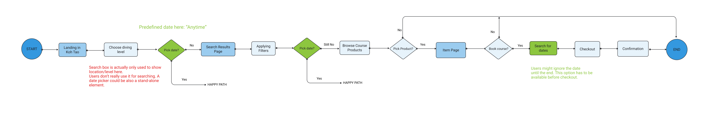
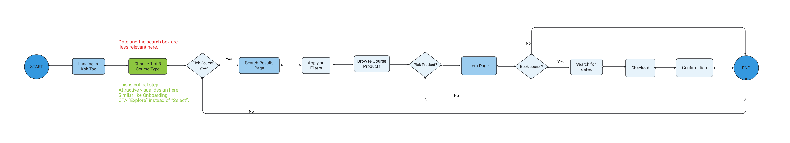
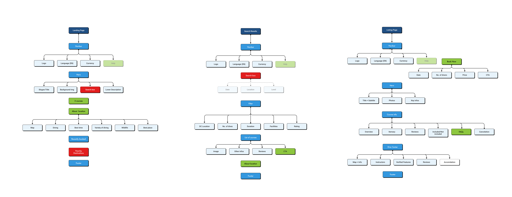
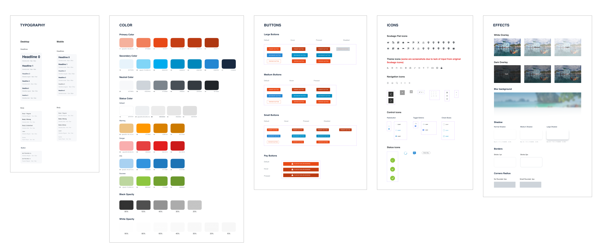
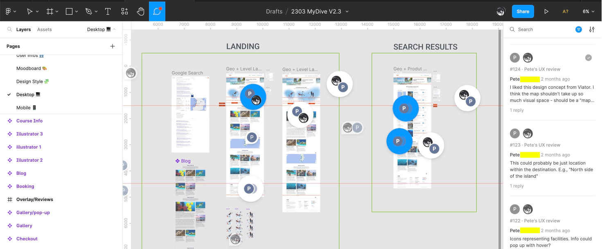
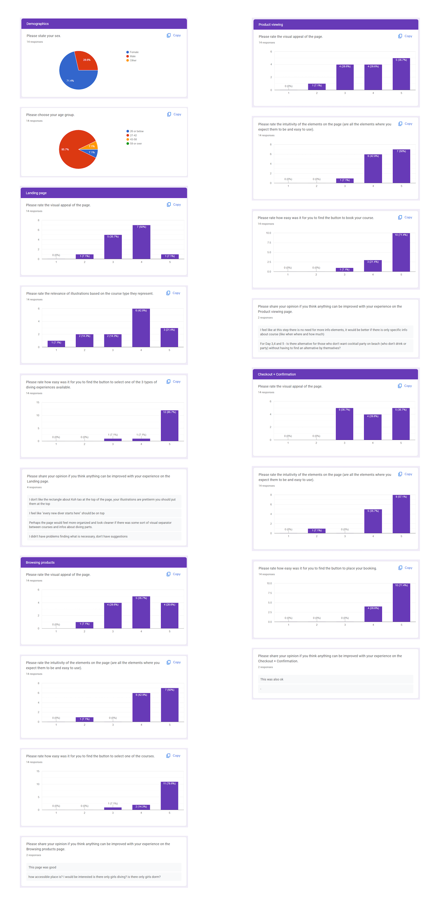

“Improve UX of an existing web design and develop its UI prototype with focus on user-friendly interface to increase the website's conversion rate.”
Page Structure
The original landing page consists mainly of a Navigation bar, a Hero section, a Features section and a Blog section with geo-location information. But the transition between sections is not clear and coherent.
Usability / Navigation
The design intention is to guide beginner divers directly to the three main types of products. But the Hero section with a large search box undermines this purpose. There is also little distinction between the Feature cards and the product cards. The navigation direction is a vertical scrolling, but the carousel of product cards goes horizontally, which slows down the natural navigating direction.
Visual aesthetics
Visual design aims to match Scubago style, which is the company's successful Listing site in 2019. This version has not yet a visual hierachy in typography, colors, iconography...
Accessibility
Scubago has taken Web Accessibility into implementation, like font size, color contrast ect. This criteria is not emphasized like SEO and SEM, and the company's base in Thailand where there's not yet strict rules for Web Accessibility like the WCAG in North America or EAA in Europe .
Consistency
The landing page also aims to match their homepage layout with a fullscreen background image and a search box in the middle. The question is, however, is it necessary at all to implement this search box? The Blog section is also packed with text, which was tested in the prior Usability Testing that users tended to skim or skip. I suggested to organise the content in a more visual way, but still keep the style in consistency with the branding.
Responsive framework
The design started with a desktop wireframe without a mobile-first approach. A mobile version was then later required, as I also pointed out that 60% of web traffic comes from mobile devices, and travellers are more likely to use this format.
SEO & SEM
This is an e-commerce site, therefore SEO and SEM are extremely importantly. All the web elements need to be assessed in terms of loading speed and performance. Using the right keywords are also emphasized. The site handles online payment, so the design needs to reflect a trust-worthy and credibility impression.
Homepage
The original design had gone through one round of Testing. The Homepage was then made out of scope, though the testing's feedbacks are still valuable. For example, users favoured the search box and background image, and had skeptical thoughts about over-commercialized elements like "Recently booked".
Landing Page
The MVP narrows down to the Landing page with a specific geo-location (Koh Tao, Thailand). Certain user behaviors or expectations emerged from this Testing that resulted in the stragety of more focus on the Features section (3 course types).
Listing Page
This page shows a challenge to simplify the information on a product card or organising these products with filtering criteria.
Item Page
This page is also packed with information. The first Testing results gave direction to the decision what information to include or to leave out.
Checkout
This is supposed to be a standard checkout page in online payment process, but there were questions raised from the Testing that needed to be taken into consideration (Message, Booking info...)
Confirmation
Confirmation page seems to be a design common sense and less important because of its position at the end of the flow. But the user feedbacks are no less valuable (PDF Print function, Content grouping...)
With the product manager, I defined two main scenarios of the user flows from landing to converting to customers. First scenario is the experienced divers landing on the page through Google search keywords like "Diving in Koh Tao", "Dive Courses in Koh Tao"... I use color code in a shared Figma file to communicate with the team: green is where I suggested changes, red is where I found problematic.
Second scenario is the beginner divers landing without any prior knowledge or preference about diving. Google search keywords could be "Learn how to dive in Koh Tao", "Beginner dive courses in Koh Tao"... In this case the search box function appears to be irrelevant. The most important information should be the Features section where they are led to the three couse types immedidately.
I started mapping out the site to keep track of the process and better overview of what could be improved or removed. The Help section is suggested but out of the scope for the MVP. The company's board was also in discussion about other features like "Accommodation" that could be included.
My first step for the high-fidelity phase is always setting up a design system composed of design styles and components in Figma. There is an existing style guide from Scubago, but in HTML format. I did some reverse-engineering in reading CSS file to construct the Figma elements.
The team's dynamics pretty much went around the Figma file. It was also a strategic decision to convince them to switch from the original XD file to Figma, as I knew there would be a lot of collaborative work and discussion. The main team operates at GMT+7 which sometimes was a challenge for me who's based in Europe, but overall it went well. We used Calendly for scheduling and Google Meets / MS Teams for discussion.
The last User Testing was in unmoderated form, conducted by a UX Researcher team mate. We collaborated closely on the testing strategy and how to communicate the results to the product manager. The positive feedbacks from the users (on average 8/10 rating) proved my useful UX/UI contribution in the project. It also brought substantial funding from the company's board for the building phase.
